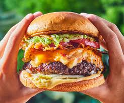

Burger

Description
This is a simple and easy to follow recipe to create your own delicious burger
Ingredients
- Ground beef or chicken
- Burger buns
- Cheddar cheese slices
- Tomato slices
- Lettuce leaves
- Pickles (optional)
- Onion slices
- Mayonnaise
- Ketchup
- Mustard
- Salt and pepper
- Butter
- Cooking oil
Steps
- Form ground beef or chicken into burger patties, season with salt and pepper.
- Heat a skillet or grill over medium-high heat and add a small amount of cooking oil.
- Cook the patties for 3-5 minutes on each side, or until cooked to your desired doneness.
- Add a slice of cheddar cheese on top of each patty during the last minute of cooking, allowing it to melt.
- Toast the burger buns lightly in butter until golden brown.
- Spread mayonnaise, ketchup, and mustard on the buns.
- Assemble the burger by layering the patty, tomato slices, onion slices, lettuce, and pickles.
- Top with the other half of the bun and serve immediately.